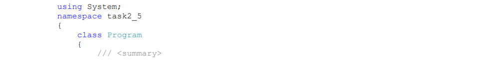

Приклади виконання завдань
1. Робота з масивами в C#
Сума, кількість елементів масиву, пошук максимального значення в масиві Розглянемо приклад програми task2_1, яка визначає суму і кількість від'ємних елементів, а також максимальний елемент масиву, що складається з 6 цілочисельних елементів.
Алгоритм розв’язання задачі такий. Масив позначимо змінною mas. Значення елементів масиву mas ініціалізуватимемо при створенні масиву. Для виведення значень елементів масиву на консоль використовуватиме цикл з параметром. Зверніть увагу, 27 що для виведення елементів масиву в один рядок використовується метод Console.Write(), а неConsole.WriteLine(). Для відокремлення елементів масиву один від одного під час виведення використовується символ табуляциії "\t" в методі Console.Write().
Генерація чисел Фібоначчі
Розглянемо задачу task2_2 генерації послідовності чисел Фібоначчі, значення яких задовольняють таким умовам:
Тут k – порядковий номер числа Фібоначчі (нумерація чисел починається від 0),
f(k) – значення k-го числа Фібоначчі. Цю задачу можна реалізувати з використанням
масивів.
Алгоритм задачі такий:
• кількість елементів масиву ввести з консолі (клавіатури);
• створити одновимірний масив вказаної розмірності;
• визначити перші два числа послідовності Фібоначчі;
• для елементів послідовності, починаючи з третього, визначити їх
значення, які дорівнюють сумі двох попередніх елементів;
• вивести значення елементів послідовності Фібоначчі.
Генерація простих чисел. Алгоритм Ератосфена
Просте число – це натуральне число, яке має рівно два різних натуральних дільники (лише 1 і саме число). Алгоритм пошуку послідовності простих чисел, що не перевищують деякого натурального числа n, називається Решетом Ератосфена за іменем давньогрецького математика Ератосфена, який вперше запропонував цей алгоритм.
Ідея і загальний опис алгоритму
Є послідовність цілих чисел від двох до n, що розташовані за зростанням. Спочатку в послідовності викреслюють усі числа, що є кратними 2, окрім самого числа 2. Далі з послідовності, що залишилася після викреслювання чисел, кратних 2, 29 викреслюють числа, що є кратними 3, окрім самого числа 3. З числами, що є кратними 4, викреслювання не відбувається через те, що вони вже викреслені. Далі продовжують викреслювати числа, що є кратні 5, окрім самого числа 5. Ці операції повторюються для тої частини послідовності, що залишилася, до поки не будуть отримані усі прості числа у вказаному діапазоні.
Описана ідея алгоритму Решета Ератосфену ілюстрована поданою нижче таблицею. У таблиці наведені усі натуральні числа від 2 до 100. Червоним помічені ті, які були видалені в процесі виконання алгоритму Решето Ератосфену
Тепер розглянемо алгоритм детальніше та його програмну реалізацію task2_3.
Для пошуку простих чисел методом Решета Ератосфену потрібно:
1. Організувати масив натуральних чисел від 2 до n=100, а також логічний
масив table розмірністю n.
2. У змінну i записати число 2, що є першим простим числом.
3. З масиву натуральних чисел викреслити усі числа, кратні i, починаючи з 2*i.
4. Записати в змінну i наступне за i число, що не викреслене.
5. Повторювати дії, описані в двох попередніх кроках, до поки не вичерпаний
діапазон натуральних чисел.
2. Оператор foreach
Оператор foreach використовується для перебору елементів в масивах та інших колекціях і є новим типом циклу, що реалізований в C#. Розглянемо приклад створення ступінчастого масиву, який заповнюється даними. За допомогою вкладених операторів циклу елементи масиву виводяться на консоль у вигляді матриці.
3. Генерація випадкових чисел
Потреба в генерації випадкових чисел часто виникає в програмуванні. В C# є нестатичний клас Random, методи якого дозволяють генерувати різні послідовності випадкових чисел. Нижче наведено приклад task2_5, в якому в методі ValsGenerator() створюється об'єкт aRand. Далі в циклі викликається метод aRand.Next(100), який при кожному виклику генерує одне випадкове число від 1 до 100 і присвоює його черговому елементу масиву. Зверніть увагу, що метод ValsGenerator() є статичним.
В методі Main() створюється масив Data, викликається метод ValsGenerator() для його заповнення, потім викликається метод Array.Sort(Data) для його сортування. Після чого елементи масиву виводяться в циклі на консоль.
Виведення масиву можнка записати з ідентифікацією елемента, значення якого виводиться на консоль, наприклад,
Зверніть увагу, що при виведенні масиву виконується неявне приведення з типу int до типу string
4. Робота з математичними функціями класу Math
Для виконання різних математичних операцій у бібліотеці класів .NET призначено клас Math. Він є статичним, тому всі його методи також статичні. Розглянемо приклад task2_6 використання математичних функцій в задачах обчислювальної математики. Постановка задачі вимагає визначити дійсні корені рівняння 6x4 − 3x3 + 8x2 − 5 = 0 за методом бісекції (ділення навпіл) на відрізках [0, 1], [-1, 0].
Алгоритм методу
Нехай [а, b] відрізок, на якому шукають корені. Припустимо, що функція f(x) неперервна на [а, b] і на кінцях приймає значення різних знаків f (a) × f (b) < 0 .
Алгоритм методу полягає в побудові послідовності вкладених відрізків, на кінцях яких функція приймає значення різних знаків. Кожний наступний відрізок отримують діленням навпіл попереднього. Опишемо один крок ітераційного методу. Нехай на k-му кроці знайдено відрізок такий, що . Знайдемо середину відрізку. Якщо - корінь і задача розв’язана. Якщо ні, то з двох половин відрізку вибираємо той, на кінцях якого функція має протилежні знаки:
Критерій закінчення ітераційного процесу: якщо довжина відрізку знаходження
кореня менше 2e , то ітерації припиняють і за значення кореня із заданою точністю
приймають середину відрізку.
Код програми task2_6 може бути таким
В цій програмі є метод static double f(doublex), в якому визначається рівняння. Для обчислення степеню числа в методі f() використовується метод Math.Pow( ) класу Math.
Другий метод static double bicect(double left, double right) реалізує ітераційний процес пошуку кореня рівняння методом бісекції. В методі Main() два рази викликається метод бісекцій для знаходження коренів на вказаних відрізках. Результати визначених коренів виводяться на консоль.
Для перевірки достовірності результатів розрахунку коренів використовується метод static void verify(double root, double precision), в якому в ліву частину заданого рівняння підставляються значення знайдених коренів. Результат підстановки порівнюється із значенням, яке обчислюється в методі f() із вказаною точністю перевірки.
5. Лінійний пошук в масиві
Лінійний або послідовний пошук реалізує алгоритм знаходження заданого значення довільної функції на деякому відрізку. Формальний запис алгоритму
1. Визначити ключ пошуку key, значення якого потрібно знайти в масиві.
2. Встановити границі L (left), R (right) області пошуку для масиву mas;
3. Якщо значення і-го елемента масиву mаsi дорівнює ключу пошуку key, елемент знайдений.
4. Інакше – перейти до наступного елементу масиву і повторити дії пп.3 та 4.
6. Двійковий (бінарний) пошук
Двійковий (бінарний) пошук (також відомий як метод ділення навпіл або
дихотомія) є класичним алгоритмом пошуку елемента у відсортованому масиві.
Формальний запис алгоритму.
1. Масив ділиться на дві рівні частини, шляхом визначення першого (a),
останнього (b) і середнього (c) елементів.
2. Середній елемент порівнюється з шуканим (s).
2.1. Якщо s < c, останньому елементу b присвоюється значення середнього
b = c, тим самим ділянка пошуку зменшується удвічі.
2.2. Якщо s > c, першому елементу a приcвоюється значення середнього
a = с, і ділянка пошуку зменшується удвічі.
2.3. Якщо s = c, елемент знайдений, і робота алгоритму завершується.
3. Якщо для перевірки не залишилося жодного елементу, алгоритм
завершується, інакше виконується перехід до пункту 2.